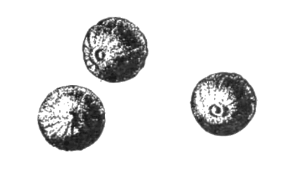

Перцы

Растения, относящиеся к роду перцев (Piper) семейства перечных, насчитывающего более полутора тысяч видов. Это небольшие лазящие полудеревянистые кустарники (лианы), дающие соцветия-кисти наподобие гроздей винограда, на каждой из которых умещаются по 30—50 мелких шаровидных плодов-костянок, обтянутых тонким слоем мякоти — околоплодника. Однако из них употребляются как пряности всего 5—6 видов, произрастающих в Южной Азии. От них получаются черные, белые, серые и коричневые (по окраске готового продукта) перцы.
Растения, от которых получаются красные перцы (капсикумы) — жгучие, полужгучие и сладкие — ничего общего с родом настоящих перцев не имеют и относятся к семейству пасленовых. О них будет сказано позднее.
Наименование «перец» придается в торговле также ряду других пряностей, не относящихся к семейству перечных. Таковы, например, «душистые перцы» и псевдо-перцы (ксилопии), также рассматриваемые здесь отдельно от настоящих перцев.
К настоящим перцам относятся следующие.
Черный перец (Piper nigrum L.)
Родина— Южная Индия. Растет и культивируется в Индии, Индонезии, Таиланде, на Цейлоне, в Малайзии, Сингапуре, Камбодже, Лаосе, Вьетнаме, странах
Карибского моря, Южной Америки.
Черный перец как пряность готовят из зеленых незрелых плодов, которые сушат целиком, с мякотью околоплодников, прямо на солнце. Иногда, чтобы убыстрить сушку, кисти плодов перца погружают на несколько минут в горячую воду или просто ошпаривают.
Высушенный перец представляет собой черные или черно-бурые морщинистые зерна диаметром 3,5—5 миллиметров. Черный перец тем лучше, чем он тверже, темнее, тяжелее. 1000 зерен черного перца хорошего качества должны весить ровно 460 граммов. Такое соотношение в весе и количестве зерен черного перца обусловливало его использование в средние века в качестве разновесок для взвешивания аптечных товаров и других малых мер, требующих большой точности. Хорошо высушенный черный перец не должен сереть в лежке. Посерение означает порчу перца, полную или частичную утрату им целебных и ароматических свойств.
Лучшими на мировом рынке сортами черного перца считаются малабарский и теллишери.
Черный перец называют часто самой универсальной пряностью, а точнее — это самая распространенная и самая известная пряность, не более универсальная, чем многие другие классические пряности. Черный перец применяется в мясных, рыбных, овощных, грибных и яичных блюдах — как холодных, так и горячих. Он входит в состав маринадов и сухих смесей пряностей. Изредка, в небольших количествах, наряду с другими пряностями черный перец можно употреблять и в сладких блюдах — в некоторых видах печений.
Нормы закладки черного перца различны и зависят исключительно от вкуса.
Белый перец (Piper nigrum L.)
Ботанически то же самое растение, что и черный перец. Но для получения белого перца как пряности используют зрелые, красные плоды перца, которые либо вымачивают в морской или известковой воде, чтобы с них сошла красная мякоть — околоплодник, окружающая семя — косточку, либо ферментируют в кучах на солнце по 7—10 дней, пока мякоть сама не слезет с косточки. Перец, приготовленный последним способом, душистее. После освобождения от мякоти белый перец сушат — он становится круглым гладким «горошком», снаружи грязно-белого цвета, а при раздавливании слегка желтоватым.

Основные районы производства белого перца — страны Индокитая (Таиланд, Лаос, Камбоджа) и Малайзии. Белый перец ценится дороже, чем черный. По вкусу он менее острый, а по запаху — более ароматичный, с несколько иным тембром. У белого перца более узкая сфера применения. Его совершенно нельзя применять в сладких блюдах. Реже применяется, он в супах и салатах. Зато в некоторых случаях (например, для отварной говядины, телятины, пельменей и вообще изделий из отварного мяса и теста) предпочтительнее применять белый перец. Дело в том, что белый перец имеет более тонкий и вместе с тем более специфический, сильный, слегка душноватый аромат, который лучше сочетается с нежными, отварными средами, не имеющими собственного запаха.
Белый перец, как и черный, входит в большинство смесей пряностей, в особенности в состав светлых и умеренных по жгучести карри.
Перецкубеба (Piper Cubeba L.)
Синонимы: яванский перец, кумукус, рину. Лиана, дающая грозди плодов («ягоду»), внешне очень похожих на черный перец, но чуть крупнее и имеющих с одного конца характерное сужение, похожее на «ножку».
Родина — Индонезия (о-ва Ява, Бали, Суматра, Борнео). Культивируется в Индонезии, Малайзии, на Цейлоне и отчасти на Антильских островах (Центральная Америка).
Пряность кубеба получается из сорванных непосредственно накануне созревания плодов (пожелтевших, но еще не успевших покраснеть), высушенных на солнце. В готовом виде кубеба представляет собой «зерна»— шарики диаметром 4—6 миллиметров темно-серого или серо-бурого цвета, с небольшим заострением-сосочком у одного полюса и с палочкой-ножкой длиной 5—9 миллиметров у противоположного полюса. Поверхность зерен довольно грубая, как бы покрытая выпуклой сетью морщин, более выраженных, чем у черного перца. В отличие от черного и белого перца зерна кубебы не монолитны, а состоят из тонкой (1 миллиметр) твердой, но хрупкой оболочки (плодовая стенка), внутри которой в полости плода свободно лежит черное семечко, прикрепленное лишь к тому полюсу, из которого отходит ножка. Другое существенное внешнее отличие кубебы от черного перца состоит в том, что при лучшей сохранности, когда она еще совсем «свежая», ее зерна имеют пепельно-серый цвет и лишь при дальнейшей лежке темнеют и буреют. Таким образом, у кубебы серый цвет — показатель хорошего качества, а у черного перца — показатель плохого качества.
Вкус кубебы пряно-жгучий и как бы охлаждающий (холодящий), наподобие мяты. Запах приятно-пряный с чуть различимым камфарным оттенком. Кубеба в несколько раз жгучее, чем черный перец, поэтому ее применяют в очень маленьких дозах, составляющих обычно четвертую часть дозы черного перца. Кубеба широко использовалась в русской кухне XVI—XVII вв. к рыбе.
В настоящее время эта пряность применяется, главным образом, в малайской кухне для ароматизации и придания жгучего вкуса блюдам из риса, овощей, мягкотелых (улитки, трепанги, голотурии) и членистоногих (крабы, омары, лангусты, креветки).
Длинныйперец (Piper longum L.-Piper officinaram).
Синонимы: долгий перец, колосковый перец, яванский перец, пипул, кавика. Два вида перечных растений, гроздь которых редуцировалась в колосок.
Произрастают в Индии, Непале (Piper longum L.), Индонезии (Ява) и на Филиппинах (Piper officinaram).
В качестве пряности используется недозрелая, зеленая ось соцветия, или семедержатель («колос»). Это цилиндр длиной от 2 до 5 сантиметров и диаметром 0,5 сантиметра, на нем расположены мельчайшие семена-плоды, вернее недоразвившиеся бутончики. «Колос» длинного перца напоминает в целом колосок тимофеевки. Чтобы получить из него готовую пряность, его сушат над слабым огнем, причем семена, если колос был недостаточно зелен, после сушки высыпаются и на их месте остаются бороздки, расположенные спиралевидно и хорошо заметные невооруженным глазом. Цвет длинного перца — серо-коричневый, запах — сильный ароматичный, вкус — значительно более жгучий, чем у черного перца.
Длинный перец был известен в Европе как пряность с IV века до нашей эры, но в средние века и новое время получил меньшее распространение, чем черный перец, так как был значительно дороже его. Применяется он до сего времени в основном в англосаксонских странах (Англия, США, Канада, Австралия), но особенно ценим и любим народами Юго-Восточной Азии. Употребляется в тех же случаях, что и черный перец (за исключением сладких блюд), как правило, в молотом виде. В целом виде идет в маринады.
Африканский перец (Piper Clusii D.)
Синонимы: гвинейский, ашантийский, западноафриканский перец, перец Леклюза, «пименто да рабо».
Родина — Либерия (Перцовый берег). Культивируется в странах Западной Африки — Гане, Гвинее, Либерии, Португальской Гвинее (Бисау).
Плоды («зерна») в готовом виде эллиптические, а не сферические, как у других видов перцев, серо-бурого цвета, без сетчатоморщинистой поверхности, с ножкой, как у кубебы, но значительно более длинной, чем само зерно (10—12 миллиметров).
Вкус умеренно жгучий, запах несколько специфический, душно-пряный.
В Европе известен с XIV века, но применялся сравнительно мало, в основном в Португалии и Англии. Широко используется в кухне народов Западной и Центральной Африки для сдабривания мясных, мучных, овощных, особенно крахмалсодержащих блюд.